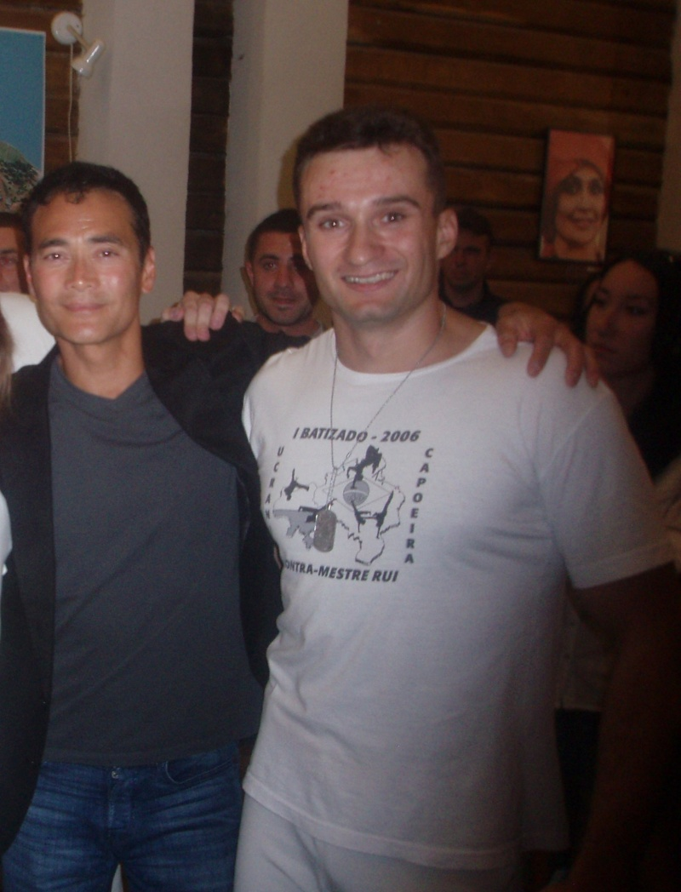
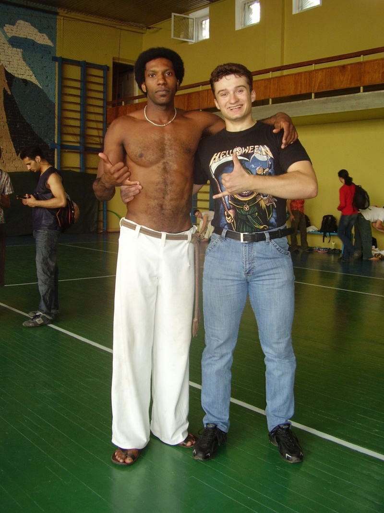

Помощь Артему Погорелову!!!!!!!!!!!!!

/uploads/image/2013/04/04/1888973b67_original.jpg Помощь Артему Погорелову!!!!!!!!!!!!!
Артем — наш верный друг, замечательный капоэирист и спортсмен, чудесный человек в целом — заболел раком крови. Он нуждается в нашей поддержке и ПОМОЩИ! Заболевание раком является одним из самых грозных, с которыми приходилось сталкиваться человечеству. На лечение требуется огромная денежная сумма, много сил и вера в лучшее. Так же нужна кровь на переливание (І-) (первая отрицательная).ПОЖАЛУЙСТА, не оставайтесь равнодушными, помогите кто как сможет.
По всем вопросам сюда :
http://vk.com/tynechka2000
или сюда :
http://vk.com/elizabeth_sun
+380934145271
+380938604557
+380667262132
Реквизиты для перечисления такие:
1.Банк «Финансовая инициатива»
Банк отримувача: ПАТ "КБ „Фінансова ініціатива“
Отримувач: ПАТ "КБ «Фінансова ініціатива»
Рахунок: 2625 5 000
Призначення платежу: "Поповнення картрахунку № 2625 1 062214001
ім'я Погорелова Надія Володимирівна (інн-1936129589)
Сбербанк Росії
Отримувач: Погорелова Надія Володимирівна
№ рах.: 26208000548321 в гривні
МФО банку 320627, код ЄДРПОУ 25959784Приватбанк
№ карты 4149437820129912
(перевод можно сделать через Приват24)